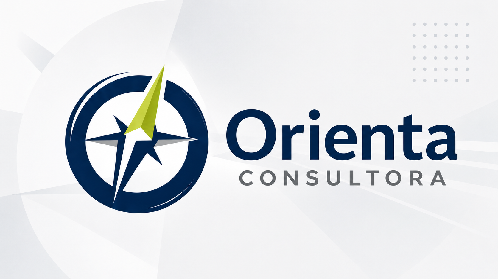
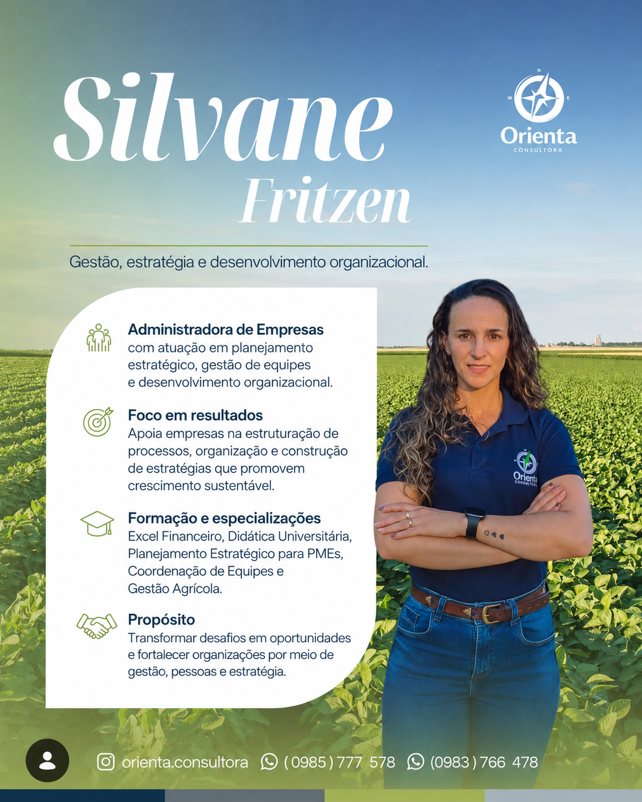
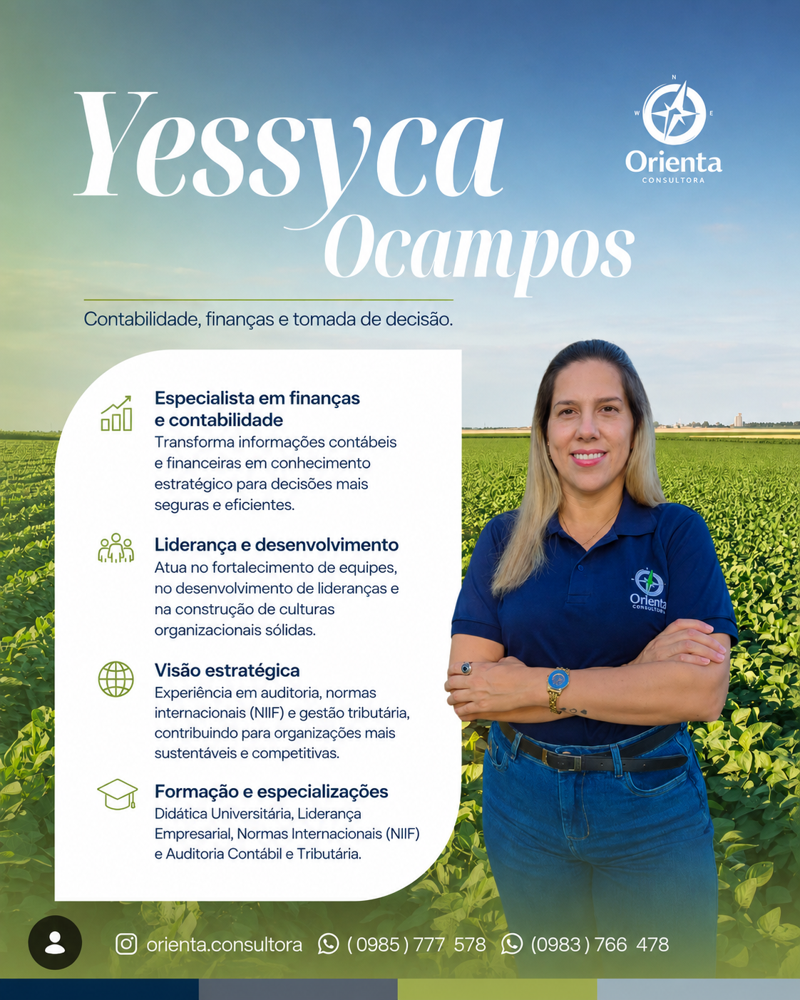

A Orienta Consultora nasceu com o propósito de apoiar organizações na construção de resultados sustentáveis por meio da gestão empresarial, finanças, contabilidade e desenvolvimento organizacional.

A Orienta Consultora surgiu da união de profissionais com experiência em gestão, finanças, contabilidade e desenvolvimento organizacional.
Nosso objetivo é apoiar empresas, organizações e instituições na tomada de decisões mais seguras, eficientes e orientadas para resultados.
Trabalhamos com proximidade, ética e visão estratégica, desenvolvendo soluções personalizadas para cada realidade.
Impulsionar organizações por meio da estratégia, gestão e desenvolvimento de pessoas, transformando desafios em oportunidades de crescimento.
Ser reconhecida como referência em consultoria, contribuindo para organizações mais fortes, sustentáveis e competitivas.
Profissionais que unem experiência, conhecimento técnico e visão estratégica para apoiar organizações em seus desafios.

Administradora de Empresas com atuação voltada ao planejamento estratégico, gestão de equipes e desenvolvimento organizacional.
Atua apoiando organizações na estruturação de processos, melhoria da gestão e crescimento sustentável.

Profissional da área contábil com experiência em auditoria, gestão financeira e normas internacionais de informação financeira.
Atua auxiliando organizações a transformar dados financeiros em informações estratégicas para decisões mais seguras e eficientes.
“Acreditamos que decisões bem orientadas constroem organizações mais fortes, equipes mais preparadas e resultados mais sustentáveis.”
Nossa missão é ajudar você a encontrar caminhos mais eficientes para crescer com planejamento, estratégia e segurança.
Solicitar Diagnóstico